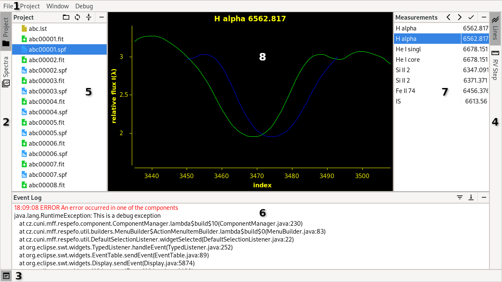

Released on the 29th January 2023, written by Adam Harmanec (adam@harmanec.com)
ReSpefo is a modern refresh of the original program Spefo, a "Simple, Yet Powerful Program for One-Dimensional Spectra Analysis" originally written in Turbo Pascal. The new version is written in Java using contemporary tools with an improved user interface and functionality.
User documentation for the program reSpefo (2023-01-29)Launching ReSpefoSystem requirementsFile FormatsUser InterfaceMenuSidebars and Tool WindowsSceneProject ExplorerSpectrum ExplorerEvent LogControlsFunctionsAdd To ProjectCleanCompareCopyDeleteDerive DispersionEW ResultsExportGenerate .lst FileImportImport MeasurementsInspect FITS HeaderMeasure EWMeasure RVOpenOpen in File ManagerOpen Plain TextOpen .lst FilePastePrepare ProjectRectifyRenameRV ResultsTrimFinal Remarks
ReSpefo is distributed as a runnable .jar archive. The program can be started from a terminal or command line using the following command:
java -jar reSpefo.jar
On Windows, it is possible to associate the Java Platform SE binary with the .jar file suffix so that it is always automatically executed using Java.
On macOS, it might be necessary to also add the -XstartOnFirstThread switch.
The program has a proprietary internal file format based on JSON with the .spf file extension. It stores the raw spectrum data, origin information and function metadata. Thanks to it's structure, the preprocessing steps and measurements can be revisited and updated without the need to redo any of the other steps.
Three file formats are currently available for import and export:
FITS - Flexible Image Transport System (.fits, .fit, .fts)
Default FITS - for most files conforming to the FITS standard
FEROS - for files from the FEROS spectrograph installed at ESO’s La Silla Observatory
BeSS - for files from the Be Star Spectra database
Hercules - for files from the HERCULES echelle spectrograph installed at UCMJO
Chiron - for files from the Chiron echelle spectrometer installed at CTIO
Ascii plain-text (.txt, .ascii, no extension)
Original legacy Spefo formats (.uui, .rui, .rci, .con)

The UI consists of several parts marked by a number in the screenshot above.
Marked by the number 1, the standard menu serves as a way to quickly access global and debug functions.
The File menu contains functionality for opening, importing and exporting files. All the functionality is also available from the Project and Spectrum Explorer.
The Project menu contains functionality for working with the project as a whole. Functions launched from this menu will scan the whole project directory and use all relevant sorted files. Some related functions are put in a group and are available in the second level of the menu.
The Window menu contains functionality for adjusting the user interface.
The Debug menu is meant for development purposes only and will eventually be removed. Regular users shouldn't need it.
The Help menu contains useful references when errors are encountered. It also contains a reference to this documentation.
There are three sidebars on the left, right and bottom edge of the user interface (marked by the numbers 2, 3 and 4 respectively). These sidebars contain different tabs. Clicking on them will show and hide their corresponding tool window. Each sidebar has it's own tool window right next to it (marked by the numbers 5, 6 and 7 respectively). When any of the toolbars is opened, it's size can be adjusted by dragging the sash on it's border. The content of the tool window is determined by the tab that is currently selected. Each tool window has a bar at the top with the tool window's name, contextual buttons and a Hide button.
The left bar (2) and tool window (5) are used for working with the whole project. The Project and Spectra tabs are used to access the Project Explorer and Spectra Explorer respectively.
The right bar (4) and tool window (7) are contextually filled with tools for the function that is currently being used. When no function is selected, the bar is empty.
The bottom bar (3) and tool window (6) contain the Event Log. If the tool window is hidden, the latest logs are temporarily displayed next to the icon in the bottom left. Clicking their text also shows the Event Log tool window and clears the tab. Long-running processes can display a progress bar along with a short description in the right-most part of the bar.
The central part of the user interface (marked by the number 8) is called the Scene. It is where the user interacts with all graphical functions. It's content is filled and cleared dynamically based on the current function.
Note: Some functions will not clear the scene automatically. This is okay. The next function that needs it will clear it and continue as expected.
The Project Explorer can be found in the left tool window after clicking the Project tab in the left sidebar.
It works as a simplified file explorer, similar to the one present in most operating systems. It allows copying and pasting, renaming and deleting files. It also serves as the main access point for most of the program's functionality. The Project Explorer features a contextual menu (opened by a right-click). It's content is dynamically filled in based on the currently selected file or group of files. The available functions and types of files they work with are described further in the chapter Functions. Some related functions are put in a group and are available in the second level of the menu.
The Project Explorer tool window has three contextual buttons. The first one from the left changes the project directory. The second one refreshes the files that are displayed, which is useful when they are modified by a different program. The third one collapses the file tree so that only the files in the top-level directory are visible.
The Spectrum Explorer can be found in the left tool window after clicking the Spectra tab in the left sidebar.
It accumulates and displays all .spf files in the project directory. The Spectrum Explorer features a contextual menu similar to the Project Explorer. All files may have up to three icons next to their names. They indicate whether the spectrum has been rectified or cleaned of cosmics (using the Rectify and Clean functions respectively) or whether rv or ew measurements were performed on it (using the Measure RV and Measure EW functions respectively).
The Spectrum Explorer tool window has two contextual buttons. The first one from the left changes the project directory. The second one refreshes the displayed files.
Note: The Spectrum Explorer is currently in the preview phase and may be unstable or slow. In the current version, the Spectrum Explorer only scans the top-level directory and ignores any nested directories.
The Event Log can be found in the bottom tool window after clicking the icon in the bottom left corner.
It displays all log messages produced by the application in a scrollable, color-coded text viewer. The output contains the time of the log, it's importance and message. They may also contain clickable links that launch a contextual action.
The Event Log tool window has two contextual buttons. The first one from the left selects the minimum importance level. Only logs with the chosen or higher importance are displayed in the event log. The second one toggles the behavior of scrolling to the end. When enabled, the event log will always scroll to the bottom of the list when a new log appears.
The communication between the application and the user is mostly carried out using dialog windows where user can select files, directories or additional settings for the corresponding functionality. Dialogs are usually confirmed by pressing the OK button and canceled by pressing the Cancel button or by closing the window.
For information and debugging purposes, the program also logs messages into the Event Log. Some important messages are also displayed in a pop-up message box.
A lot of the work is done with charts displayed in the main section of the user interface. The chart can be navigated using the mouse and the keyboard. The common controls are as follows:
| Function | 1st Control | 2nd Control |
|---|---|---|
| Move Up | Arrow Up | W |
| Move Left | Arrow Left | A |
| Move Down | Arrow Down | S |
| Move Right | Arrow Right | D |
| Zoom In | + | Ctrl + Mouse Wheel Up |
| Zoom Out | - | Ctrl + Mouse Wheel Down |
| Zoom In Y-axis | Numpad 8 | 8 |
| Zoom Out Y-axis | Numpad 2 | 2 |
| Zoom In X-axis | Numpad 6 | 6 |
| Zoom Out X-axis | Numpad 4 | 4 |
| Adjust the view | Space | |
| Move around | Click and Drag |
Note: The movement speed depends on the zoom level. More precise movement can be done when zoomed in whereas faster movement is more easily done when zoomed out.
Note: Sometimes the Scene loses focus and will not react to button presses. This can be fixed by using the Window → Focus Scene option in the top menu.
Note: The following list is ordered alphabetically not in the order of importance.
Note: There are several functions in the Debug group. These are meant for development purposes only and will eventually be removed. Regular users shouldn't need them.
Applicable to the whole project.
This function is used to add new FITS files into a project that was set up using the Prepare Project function.
It scans the project directory for FITS files that are not named using the naming convention with the given prefix, asks for an import format to use and renames them using the next available index. In addition, it has two different modes:
.lst file also adds the renamed files to the selected file.hec2 input data also creates a new file to be used as input for the program hec2.Note: The next available index is determined by scanning the project for .spf files named using the naming convention and by selecting the highest index plus 1.
group: Preprocessing
Applicable to a single file in the internal format.
This function is used to remove excessive noise or bad pixels from a spectrum file.
The selected spectrum is loaded and displayed in a scatter chart. One of the points is always considered to be active and is displayed in a different color. When the mouse moves, the closest point to it is selected as the active one. Unwanted points can be cleared and the program will calculate a new position for them using Hermite polynomials. The deleted points are still visible and displayed in a different color and can be restored.
The chart can then be navigated as described in the section Controls. Additionally, there is a number of other control elements:
| Control | Action |
|---|---|
| Delete | Clear the active point |
| Insert | Restore the active point |
| N | Change the active point to the one to the left (if there is any) |
| M | Change the active point to the one to the right (if there is any) |
| Ctrl + X | Restore all points (after confirmation) |
The cleaning process is confirmed by pressing Enter. That will clean and display the updated spectrum as if it was just loaded.
Note: In the current version, it is not possible to add or move points to smooth out large cleared areas.
Applicable to multiple files in the internal format.
This function is used to compare multiple spectrum files.
The selected spectra are loaded and displayed in different colors. The same colors are used in the chart title. The chart can then be navigated as described in the section Controls.
Applicable to any single file or any group of files.
This function is used to copy files.
The selected files are stored in a clipboard and can be pasted using the function Paste.
Applicable to any single file or any group of files.
This function is used to delete files.
A confirmation message box appears with the names of the selected files. If confirmed, all the selected files are deleted. If a directory is selected, it's contents are also recursively deleted. If the deletion of any of the files failed, a message box with their names is displayed.
group: FITS
Applicable to a single file in the FITS format.
This function is used to transform a spectrum in pixels to wavelength. It also automatically imports the file into the internal format.
At first, three additional FITS files need to be selected. One lab light file that was obtained before the selected file, one lab light file that was obtained after the selected file and a .cmp file with laboratory values for absorption lines.
The process is split up into several stages:
In the first stage, at least two lines must be manually selected and measured. A new line is added using Insert. It can then be moved using the mouse or J and L. The line can be canceled using Escape. Enter is used to confirm that the line is positioned approximately where it is supposed to be. The user then needs to specify the number of the line as defined in the .cmp file and measure it's center using a mirrored profile as in the Measure RV function for both the lab light files. When at least two lines are measured this way, pressing Enter will proceed to the next stage.
In the second stage, all the remaining lines are measured for both the lab light files. The user no longer needs to manually position them because they are interpolated from the already measured ones. As usual, the measurements are confirmed using Enter or Insert and skipped using Escape or End.
When all the lines are processed, the dispersion function is calculated. The measurements whose residuals are at least 1.5 times larger than the mean aren't used. Information about the function are displayed in the results page. The dispersion function is modeled in the top left corner. The residuals are in the bottom left corner, with the unused ones in a different color. A table with the measurements is displayed in the right part, with the unused measurements grayed out. Below the table are the calculated polynomial coefficients. The user can select a row in the measurements table and use Delete to toggle whether that measurement is used or not. The results are updated accordingly. Below the coefficients are three buttons. The first one, Poly degree, can be used to change the degree of the polynomial. Values of 3 or 5 are recommended. The second button, Print to file, can be used to generate a .cmf file with the results. The last button, Finish, will confirm the results, import the spectrum file, transform it's data using the calculated dispersion function, save it into a new file using the internal format and display the imported spectrum as if it was just loaded.
Note: The first dialog is temporary and will be improved. This function has not been properly tested, use with caution.
group: Results
Applicable to a single file or multiple files in the internal format or to the whole project.
This function is used to display the results of the measurements obtained using the function Measure EW. It can be used to display more detailed results for a single file or to combine the results from multiple files into a single table.
If used on a single file, the user can delete the measurements for a single line using the Delete button.
If used on multiple files, the user can print the results into an .eqw file using the Print to file button.
If used on the whole project, it's root directory is scanned for .spf files and continues as if they were selected manually.
Note: Duplicate measurements in a single file are highlighted.
Applicable to a single file or multiple files in the internal format.
This function is used to convert files in the internal format to a different format.
If used on a single file, the user can select the full name of the new file. The file extension is then used to determine the available export formats. The preferred one can then be selected in a dialog.
If used on multiple files, the user can select the file extension for all files. The file extension is then used to determine the available export formats. The preferred one can then be selected in a dialog. The names of the files are kept the same except for the file extension.
The export dialog has advanced options for special usecases:
corr category).Note: This function can elegantly handle overriding and renaming duplicate files.
.lst FileApplicable to multiple files in the internal or FITS format.
This function is used to create a .lst file with a table of the selected files.
Note: The generated file header is empty.
Applicable to a single file or multiple files in any of the importable formats.
This function is used to convert files into the internal format.
The file extensions of the selected files are extracted and used to determine the available import formats. The preferred one can then be selected in a dialog. If used on a single file, the user can select the full name of the new file. If used on multiple files, the names of the files are kept the same except for the file extension.
The import dialog has advanced options for special usecases:
Replace NaN values - this will check for the presence of NaNs in the spectrum data and replaces them with the provided value. It is highly recommended to keep this setting unchanged.
Default RV correction value - the imported spectra files must contain a RV correction. If they don't contain one, the default provided value is used. Otherwise, a dialog asking for it is displayed.
Import data from a .lst file - if there is some spectra metadata missing after the import, the program will try to find a corresponding record in the provided .lst file and use it to complete the data. This works for hjd, date of observation and time of exposure. The way rv correction is handled can be specified further:
.lst file is what should be applied.Import data from an .ac file - when importing legacy files with already measured telluric lines, this option will use the corresponding record in the provided .ac file to adjust rv correction in the header to reflect their difference.
Note: This function can elegantly handle overriding and renaming duplicate files.
Applicable to the whole project.
This function is used to copy measurements from another projects. It is typically used when multiple people collaborate on the same files.
First, a directory from which measurements are to be imported is selected in a dialog. The function will then match files in the current project and the selected directory by name and copy the measurements between them. If there are already some measurements in the current project, the new ones are appended. When finished, the function will report how many files were updated, unchanged or failed.
Note: This function currently supports only EW and RV measurements.
group: FITS
Applicable to a single file in the FITS format.
This function is used to inspect the header of a FITS file. No changes to the file can be made.
The FITS file is loaded and it's header values are displayed in a table.
Note: Whole rows can be copied into the system clipboard using Ctrl + C.
group: Measure
Applicable to a single file in the internal format.
This function is used to measure equivalent widths and other properties on a spectrum file.
First, the user is prompted to select a list of .stl files to use. The files are then loaded and a part of the spectrum is displayed in a line chart on the left. This is where the user measures the center or any other region of the line profile. Several vertical lines are displayed in the chart. One of them closest to the mouse is always considered to be active, is displayed in a different color and can be moved using the mouse or J and L. The blue lines are used to mark the area used for computing EW. To add a new measurement to the current line, press Enter or insert. That will open a dialog window where the user can select which part of the line is currently being measured. That will add a new orange line with it's type written near the top of the chart. A line can be deleted using Delete. To move to the next line, Escape or End can be used. The arrow buttons in the top bar of the right tool window can also be used to navigate between lines.
When the last line is measured the results are saved into the spectrum file and displayed using the EW Results function.
Note: The controls for this function are not final and will improve in the future.
group: Measure
Applicable to a single file in the internal format.
This function is used to measure radial velocity on a spectrum file.
First, the user is prompted to select two lists of .stl files to use. The first one is for regular measurements and the second one is for measuring telluric lines.
The files are then loaded and a part of the spectrum as well as a flipped part of it is displayed in a line chart on the left. This is where the user measures the center or any other region of the line profile by aligning the original and flipped lines. When the measurement is confirmed, a new dialog appears where the user selects a category and optionally a comment. Correction measurements have their category predefined.
The chart can then be navigated as described in the section Controls with some exceptions and additions:
| Control | Action |
|---|---|
| Arrow Left or A | Move the flipped part to the left |
| Arrow Right or D | Move the flipped part to the right |
| Click and Drag | Move the flipped part |
| Tab | Expand the flipped radius |
| Ctrl + Tab | Shrink the flipped radius |
| Enter or Insert | Confirm measurement |
| Escape or End | Move to the next measurement |
The table in the right tool window as well as the arrow buttons in the top bar of the Lines tab in the right sidebar can be used to navigate between lines.
In the RV Step tab of the right sidebar, the user can select the type of rv step to use when using the keyboard to move the flipped part. It's size can either be calculated dynamically from the zoom level or set to a fixed value.
When the last line is measured or the check button in the top bar of the Lines tab is pressed the results are saved into the spectrum file and displayed using the RV Results function.
Applicable to a single file in the internal format.
This function is used to display and inspect individual spectrum files. No changes to the file can be made.
The spectrum is loaded and displayed in a line chart. The chart can then be navigated as described in the section Controls.
In the Info tab of the right sidebar, the spectrum metadata is displayed in a table. Some values may be edited by selecting the respective row and clicking the only button in the tool window tab or by double-clicking the row directly. A modal dialog is used to select the new value. The updated values are saved automatically. If a change is made to the rv correction, the difference can be applied to the spectrum data by confirming the follow-up dialog.
Applicable to a single directory.
This function is used to open a directory in operating system's default file manager.
Note: Not all operating systems support this functionality.
Applicable to a single file in the ASCII format.
This function is used to inspect a text file. No changes to the file can be made.
The file is loaded and displayed along with it's name at the top.
Note: This function is not very effective in opening large files.
.lst FileApplicable to a single
.lstfile.
This function is used to inspect a .lst file. No changes to the file can be made.
The file is loaded and displayed in a formatted table with it's name and header at the top.
Applicable to any single file.
This function is used to paste files from the clipboard to a new location.
The files copied using the function Copy are inserted into the selected directory or it's parent if it is not a directory. This function is not available if multiple files are selected or there are no files in the clipboard.
Note: This function can elegantly handle overriding and renaming duplicate files.
Applicable to the whole project.
This function is used to prepare a directory of FITS files for processing.
It scans the project directory for FITS files, asks for an import format to use and renames them all using a given prefix. In addition, it has three different modes:
.lst file also renames the selected file..lst file also creates a new .lst file similarly to the function Generate .lst file.hec2 input data also creates a new file to be used as input for the program hec2.
group: Preprocessing
Applicable to a single file in the internal format.
This function is used to rectify a spectrum. It works by defining a continuum using multiple points selected in a chart. The program models and displays the continuum in real-time using Hermite polynomials. When confirmed, the flux values of the original spectrum are divided by the values defined by the continuum, therefore transforming them into relative values.
The selected spectrum is loaded and displayed in a line chart. In addition, two initial rectification points are created or points are transferred from the previous rectification (if there was any). One of the points is always considered to be active and is displayed in a different color. When the mouse moves, the closest point to it is selected as the active one.
The chart can then be navigated as described in the section Controls. Additionally, there is a number of other control elements:
| Control | Action |
|---|---|
| Insert | Add a new point to the center of the view (it is selected as active) |
| Left Mouse Click | Add a new point at the cursor location (it is selected as active) |
| Delete | Delete the active point (unless it is the last one) |
| Right Mouse Click | Delete the active point (unless it is the last one) |
| Click and Drag | Move the active point |
| I | Move the active point up |
| J | Move the active point left |
| K | Move the active point down |
| L | Move the active point right |
| N | Change the active point to the one to the left (if there is any) |
| M | Change the active point to the one to the right (if there is any) |
| P | Adjust the view so that the active point is in the center |
The continuum selection is confirmed by pressing Enter. That will rectify and display the updated spectrum as if it was just loaded.
This function behaves differently when used on an echelle spectrum imported using the CTIO Chiron import format. It uses a parametrized blaze function to define the rectification continuum for each echelle order.
The selected spectrum is loaded and displayed in a line chart. In the first step, a polynomial or as spline function is fit to estimate the scaling factor for the blaze function for each order. A point is displayed for each order corresponding to its estimated central wavelength and scaling factor. These points can be enabled or disabled in the table on the right. The third button in the top bar of the right tool window can be used to (de)select all of them. The one closest to the mouse is highlighted and can be moved by clicking and dragging with the mouse. The chart can be navigated as described in the section Controls. Additionally, the polynomial order can be changed using the second button in the top bar of the right tool window. The fit selection is confirmed by pressing Enter, End or using the check button in the top bar of the right tool window.
The blaze function parameters are more accurately estimated using the polynomial or spline function but can be further manually corrected for some echelle orders. These are selected in a dialog and are interactively processed in the next steps. Multiple consequent orders can be (de)selected using a specialized dialog. After processing all of them, the dialog appears again and another set of orders can be processed. This is useful, because the scaling polynomial is recalculated after each set which can aid in the processing of the next group. The loop ends once no new orders are selected in this dialog.
Each selected order is individually displayed in a line chart along with the estimated blaze function, the resulting rectification of the current and two neighboring echelle orders, the rectification unary continuum line and several other straight lines. The horizontal line corresponds to the scaling factor and the vertical line to the central wavelength. The one closer to the mouse is highlighted and can be moved by clicking and dragging or using the arrow keys. A subtle dashed line is displayed in place of the estimated setting for each parameter. The selection is confirmed by pressing Enter or End.
When the blaze parameters are refined, 20 points are uniformly sampled and used for rectification of the given order. These can be further adjusted exactly as in the case of regular spectrum rectification as described in the section above. Additionally, the neighboring orders as well as their rectified version and are displayed. The graph also contains a line corresponding to the unary continuum. Lines corresponding to 0.99 and 0.98 can be toggled on and off using Tab.
It is possible to return to the previous step in the process by pressing Backspace.
Finally, all orders are rectified using the manually selected or automatically estimated parameters, stitched together and the updated spectrum is displayed as if it was just loaded.
Note: The polynomial order or spline function as well as the order points are saved to the file and also transfered to other unrectified files opened in the same session.
Note: For calibration and debug purposes, the user can select to print blaze parameters for fine-tuned orders by checking this option in the order selection dialog. These parameters can be inspected and changed during the blaze parameter fine-tuning in the right tool window.
Applicable to any single file.
This function is used to rename a file.
If used on a single file, a text field replaces the file name in the Project Explorer. It can then be renamed in-place. The operation is confirmed using Enter. It can be canceled by pressing Escape or clicking away. A unique name for the file must be chosen.
group: Results
Applicable to a single file or multiple files in the internal format or to the whole project.
This function is used to display the results of the measurements obtained using the function Measure RV. It can be used to display more detailed results for a single file or to combine the results from multiple files into a single table.
If used on a single file, the user can edit or delete individual measurements in a menu opened by right-clicking on the corresponding line.
If used on multiple files, the user can print the results into a .rvs, .cor or .ac file using the corresponding Print to ... file button. The printing of measurement errors is toggled by a checkbox next to these buttons.
If used on the whole project, it's root directory is scanned for .spf files and continues as if they were selected manually.
Note: Duplicate measurements in a single file are highlighted.
group: Preprocessing
Applicable to a single file in the internal format.
This function can be used to limit the range of the spectrum to be used.
In a dialog, the minimum and maximum for the x values can be chosen. Confirming the dialog applies the change and displays the updated spectrum as if it was just loaded.
Note: This function might have unexpected effects on some of the other preprocessing functions.
This program is still in active development and may contain bugs or crash unexpectedly, please always save and back up your work.
Any and all feedback is greatly appreciated.
Software is distributed under EPL 2.0.